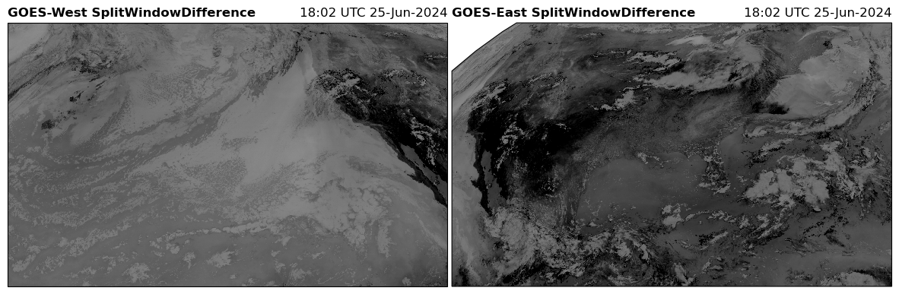
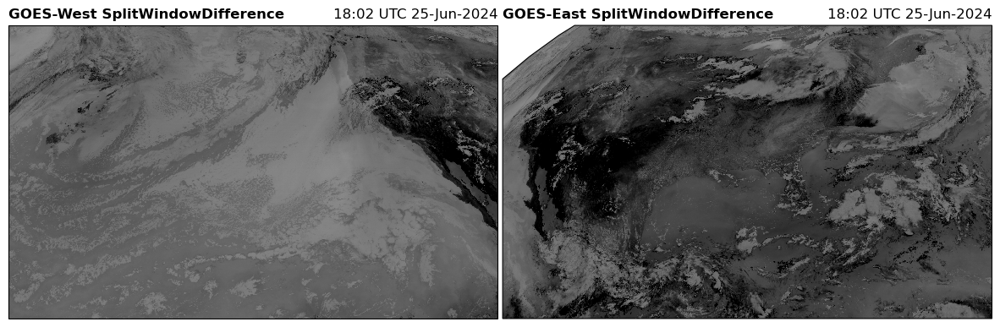

59. GOES ABI RGB Recipes#
Brian Blaylock
September 26, 2019
For details on the RGB recipies below see the RAMMB CIRA website for GOES-R, including:
TrueColor
FireTemperature
AirMass
DayCloudPhase
DayConvection
DayLandCloudFire
WaterVapor
DaySnowFog
etc.
These recipies are provided by the rgb custom accessor. This accessor is avaialble when you import goes2go.
59.1. Simple RGB Figure#
At the most simple level, here is how to produce an RGB from the GOES ABI data.
from goes2go.data import goes_nearesttime
import matplotlib.pyplot as plt
from datetime import datetime
from pathlib import Path
import xarray
/Users/phil/mini310/envs/a301/lib/python3.13/site-packages/goes2go/data.py:673: FutureWarning: 'H' is deprecated and will be removed in a future version. Please use 'h' instead of 'H'.
within=pd.to_timedelta(config["nearesttime"].get("within", "1h")),
/Users/phil/mini310/envs/a301/lib/python3.13/site-packages/goes2go/NEW.py:185: FutureWarning: 'H' is deprecated and will be removed in a future version. Please use 'h' instead of 'H'.
within=pd.to_timedelta(config["nearesttime"].get("within", "1h")),
# Get an ABI Dataset
save_dir = Path.home() / "repos/a301/satdata/goes"
writeit = False
if writeit:
g = goes_nearesttime(
datetime(2020, 6, 25, 18), satellite="goes16",product="ABI-L2-MCMIP", domain='C',
return_as="xarray", save_dir = save_dir, download = True, overwrite = False
)
the_path = g.path[0]
else:
the_path = ("noaa-goes16/ABI-L2-MCMIPC/2020/177/18/"
"OR_ABI-L2-MCMIPC-M6_G16_s20201771801172_e20201771803551_c20201771804104.nc")
full_path = save_dir / the_path
g = xarray.open_dataset(full_path,mode = 'r',mask_and_scale = True)
# Create RGB and plot
image = g.rgb.TrueColor()
image.plot.imshow();
59.2. Cartopy RGB Figure#
The RGB can easily be added to a Cartopy axis
g.rgb.imshow_kwargs
{'extent': [np.float64(-3626269.332309611),
np.float64(1381769.9431296065),
np.float64(1584175.830644913),
np.float64(4588197.756226748)],
'transform': None,
'origin': 'upper',
'interpolation': 'none'}
ax = plt.subplot(projection=g.rgb.crs)
ax.imshow(g.rgb.TrueColor(), **g.rgb.imshow_kwargs)
ax.coastlines()
ax.get_extent()
(-3626269.332309611, 1381769.9431296065, 1584175.830644913, 4588197.756226748)
59.2.1. keywords for cartopy plotting#
g.rgb.imshow_kwargs
{'extent': [np.float64(-3626269.332309611),
np.float64(1381769.9431296065),
np.float64(1584175.830644913),
np.float64(4588197.756226748)],
'transform': None,
'origin': 'upper',
'interpolation': 'none'}
59.3. All available RGB recipes#
from goes2go.data import goes_nearesttime
import cartopy.crs as ccrs
import matplotlib.pyplot as plt
writeit = False
if writeit:
G16 = goes_nearesttime('2024-06-25 18',satellite=16,save_dir=save_dir)
print(G16.path[0])
else:
the_path = ("noaa-goes16/ABI-L2-MCMIPC/2024/177/18"
"/OR_ABI-L2-MCMIPC-M6_G16_s20241771801172_e20241771803557_c20241771804062.nc")
full_path = save_dir / the_path
G16 = xarray.open_dataset(full_path,mode = 'r',mask_and_scale = True)
if writeit:
G18 = goes_nearesttime('2024-06-25 18',satellite=18,save_dir=save_dir)
print(G18.path[0])
else:
the_path = ("noaa-goes18/ABI-L2-MCMIPC/2024/177/18/OR_ABI-L2-MCMIPC-M6_G18_s20241771801172_"
"e20241771803545_c20241771804067.nc")
full_path = save_dir / the_path
G18 = xarray.open_dataset(full_path,mode = 'r',mask_and_scale = True)
rgb_products = [i for i in dir(G16.rgb) if i[0].isupper()]
for product in rgb_products:
fig = plt.figure(figsize=(15, 12))
ax18 = fig.add_subplot(1, 2, 1, projection=G18.rgb.crs)
ax16 = fig.add_subplot(1, 2, 2, projection=G16.rgb.crs)
for ax, G in zip([ax18, ax16], [G18, G16]):
RGB = getattr(G.rgb, product)()
#common_features('50m', STATES=True, ax=ax)
ax.imshow(RGB, **G.rgb.imshow_kwargs)
ax.set_title(f"{G.orbital_slot} {product}", loc='left', fontweight='bold')
ax.set_title(f"{G.t.dt.strftime('%H:%M UTC %d-%b-%Y').item()}", loc="right")
plt.subplots_adjust(wspace=0.01)
#plt.savefig(f'../docs/_static/{product}', bbox_inches='tight')
/Users/phil/mini310/envs/a301/lib/python3.13/site-packages/goes2go/accessors.py:1251: UserWarning: THE `NormalizedBurnRatio` FUNCTION IS NOT FULLY DEVELOPED. NEED MORE INFO.
warnings.warn(
Clipping input data to the valid range for imshow with RGB data ([0..1] for floats or [0..255] for integers). Got range [-0.757256..1.0].
/Users/phil/mini310/envs/a301/lib/python3.13/site-packages/goes2go/accessors.py:1251: UserWarning: THE `NormalizedBurnRatio` FUNCTION IS NOT FULLY DEVELOPED. NEED MORE INFO.
warnings.warn(
Clipping input data to the valid range for imshow with RGB data ([0..1] for floats or [0..255] for integers). Got range [-0.49068323..1.0].
/var/folders/h3/5svt7fds58v0x7kkc54kl3640000gn/T/ipykernel_60055/210842163.py:5: RuntimeWarning: More than 20 figures have been opened. Figures created through the pyplot interface (`matplotlib.pyplot.figure`) are retained until explicitly closed and may consume too much memory. (To control this warning, see the rcParam `figure.max_open_warning`). Consider using `matplotlib.pyplot.close()`.
fig = plt.figure(figsize=(15, 12))


 
